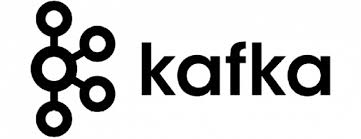

Real-world streaming,
taught by practitioners.
Apache Kafka, Spark, Flink, Iceberg are the state of the art technologies for data engineering. This series focuses on how to use them to build real-time, data-intensive applications. This is an intermediate to advanced track — built for those who want to go beyond tutorials and truly understand data engineering and streaming at depth.
What you will learn
Data Infrastructure Theory
Essential elements of data infrastructure theory and the reasoning behind architectural decisions.
Streaming Pipelines
Hands-on end-to-end streaming data pipelines that participants follow along in real time.
Is this for you?
Engineering Background
Built for Data, Platform, or SRE engineers working with distributed systems.
Advanced Learning
Ready to move past basic tutorials into system internals and core architecture.
Scale Mindset
Interested in building production-grade streaming infrastructure at scale.
What to bring
Your Laptop
Fully charged with docker-compose installed and ready for hands-on labs.
Enthusiasm
A builder's mindset to follow along, experiment, and explore system internals.
Topics

Apache KafkaSystem Internals
Theory grounded in system internals - the reasoning behind architectural decisions.
Hands-on Labs
Follow-along labs in real time to build end-to-end data pipelines.
Industry Use-cases
Real-world scenarios from fintech, logistics, e-commerce, and analytics.
Who's teaching
Pavan Keshavamurthy
Co-founder & CTO, Platformatory
15+ years of experience in product and platform engineering, technology architecture, and building large-scale distributed systems. He works across Apache Kafka, Apache Flink, Kong, and cloud-native infrastructure.
Avinash Upadhyaya K R
Platform Engineer, Platformatory
Avinash specialises in platform engineering with a focus on Apache Kafka, Kubernetes, and Kong. Multi-cloud certified across Azure, Google Cloud, Linux Foundation, and Kong.
Upcoming dates
May
16
(5-8 pm)
May
23
(5-8 pm)
June
06
(5-8 pm)
June
13
(5-8 pm)
Series continues across May and June. Weekend evenings, 5-8 pm. Free to attend.
Register your interest
43 Workspace & Events
In-person sessions at one of Bengaluru's great collaborative spaces. Come ready to learn, build, and meet others in the community.
Limited seats · Free
Ready to go deep
on streaming data?
Register your interest and we'll keep you updated on confirmed dates, agenda details, and how to secure your spot.
Register Your InterestDon't want to miss the next one? Follow us on Luma